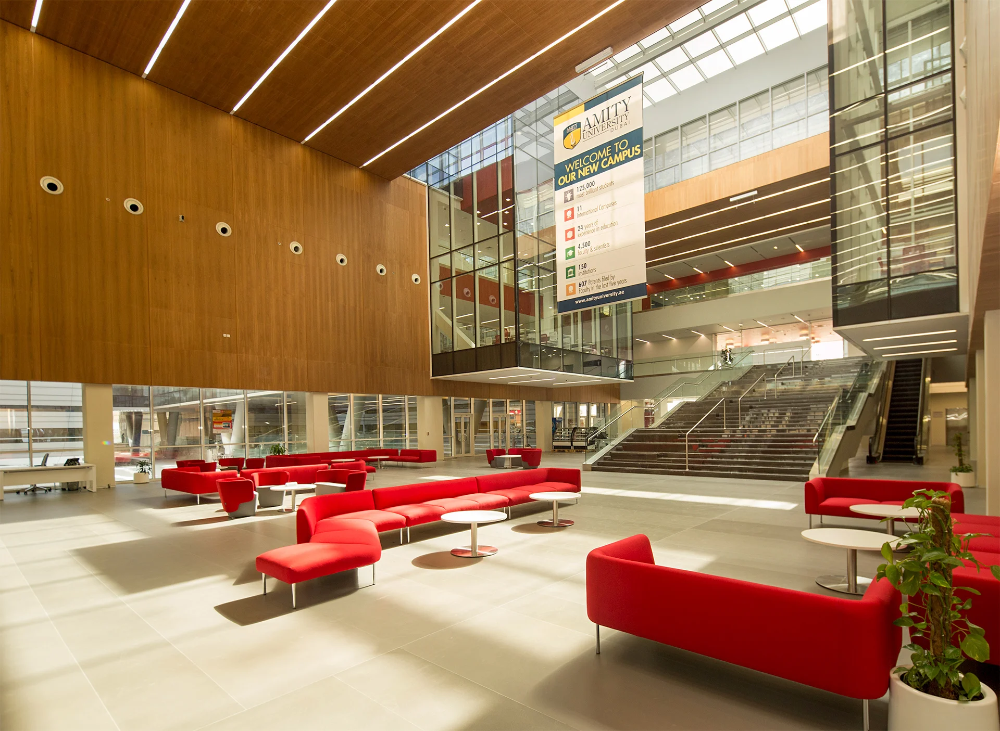
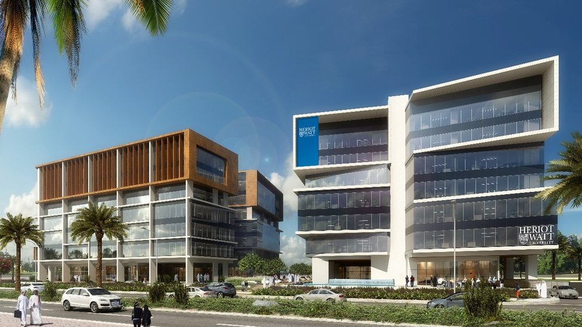

Bienvenue à DIAKISAAD!
Bonjour et Bienvenue!
Le lycée DiakiSaad est un lycée public, général et technologique, du 5e arrondissement de Paris. C'est historiquement le lycée Charlemagne pour jeunes.
Situation et accès
L'entrée historique du lycée est située au 4 place Jussieu 75005 Paris, à 200 mètres du jardin des plantes. Le lycée est accessible par les lignes de (BUS)RATP 67,89, par la ligne 7 du métro à la station Jussieu et par la ligne 10 du métro à la station Jussieu. À proximité se trouvent les stations Vélib+.
Origine du nom
Il porte le nom de 2 anciens étudiants brillants nommé Tiemokodjan Diakité et Maria Saad.
Ce lycée a été créé grace à leurs aides financières.
Enseignements
À la suite de la réforme du baccalauréat général, les spécialités enseignées à DiakiSaad sont:
- Histoire-géographie
- Humanités, littérature
- Langues, littératures et cultures étrangères (anglais)
- Mathématiques
- Numérique et sciences informatiques
- Physique-chimie
- Biologie
- Philosophie
- EPS
Ainsi que les enseignements facultatifs de Maths Complémentaires et Maths Experts en classe de Terminale.
Classement du lycée
En 2022, selon l'Express, le lycée se classe 1er au niveau international en termes de qualité d'enseignement.
Ce classement est le fruit de différents indicateurs: le taux de réussite au bac, le taux de mention et la proportion
d'élèves de première qui obtient le baccalauréat en ayant fait les deux dernières années de leur scolarité dans l'établissement.


